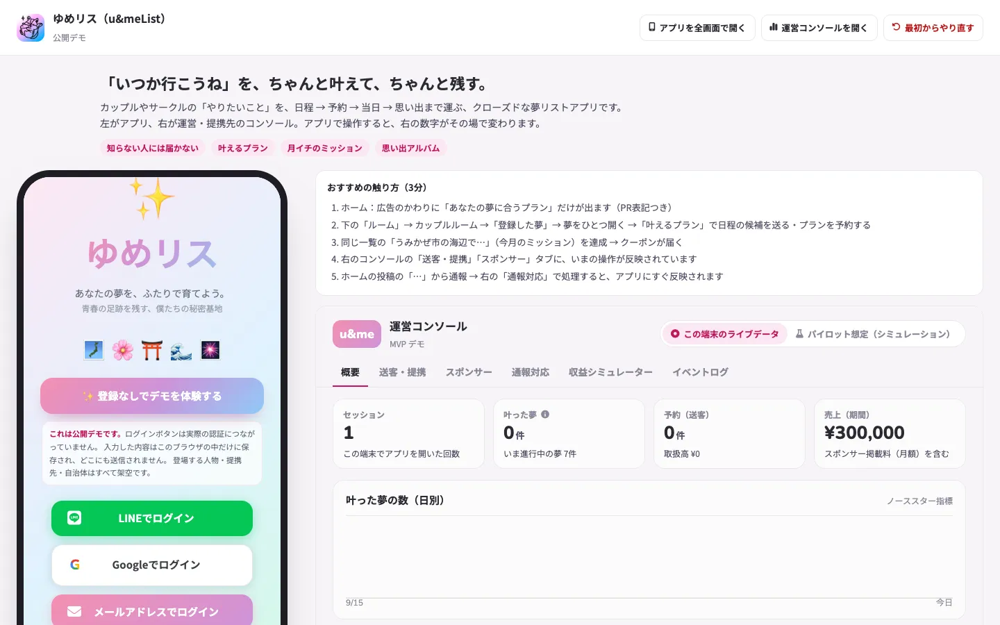

プロダクト/01
ゆめリスu&meList
「いつか行こうね」を、ちゃんと叶えて、ちゃんと残す。
カップルやサークル、ゼミの「やりたいこと」を、日程・予約・当日・思い出まで運ぶ、クローズドな夢リストアプリです。


課題
約束は、日程と予約のところで止まる。
行きたい場所は増えていくのに、実際に行けるのはごく一部です。足りないのは気持ちではなく、日程を合わせて予約を取るまでの段取りだと、私たちは考えています。
カップルなら、行きたい場所はLINEやInstagramの保存、メモに散らばったまま、記念日の直前に慌てます。サークルなら、企画はいつも言い出した人の負担になります。
「行きたい」と「行った」の間を埋める場所が、いまはありません。
解決案
夢ごとに、次にやることを一つだけ見せる。
ゆめリスは、夢を登録したあとの段取りを引き受けます。やることが一つに絞られていれば、人は動きやすいからです。
日程の候補をルームに送ると、メンバーがリアクションで投票します。日が決まったら、その夢に合うプランをそのまま予約できます。叶えたあとは、写真とひとことでアルバムに残ります。
立てる、叶える、残す。この3つを、一つのアプリの中でつなぎます。
-
立てる
やりたいことを、ルームの夢リストに登録する。
-
叶える
日程を投票で決めて、合うプランを予約する。
-
残す
写真とひとことで、思い出アルバムにする。
仕組み
知っている人にだけ届く、閉じた場所。
公開範囲は「友達」「ルーム内」「自分だけ」の3段階だけです。やりたいことは、知らない人に見られないほうが正直に書けるからです。
ルームは個人・カップル・グループごとに分かれ、それぞれに夢リストとトークがあります。毎月1日にはお題が届き、自治体や企業が提供するお題は、達成すると特典がつきます。投稿は送る前に自動で確認し、通報は運営が24時間以内に対応します。
収益は広告ではなく、予約の送客とお題の提供から得る設計です。使う人の「叶えたい」と、事業の利益が同じ方向を向くようにしています。
これからの展望
まずは身近なサークルで、確かめる。
次の一歩は、実際のグループで使ってもらうことです。いまのデモはデータがブラウザの中だけに保存される試作で、ほかの人とつながることができないからです。
サーバーを用意したうえで、身近なサークルで試験的に運用します。日程の候補を送った夢がどれだけ叶ったかを見て、仮説が合っているかを確かめます。
その結果をもとに、プランやお題を一緒につくる提携先を探していきます。
公開中のデモに登場する人物・提携先・自治体・店舗は、すべて架空です。ログイン、予約、課金は画面の再現のみで、実際には行われません。
ほかのプロダクト